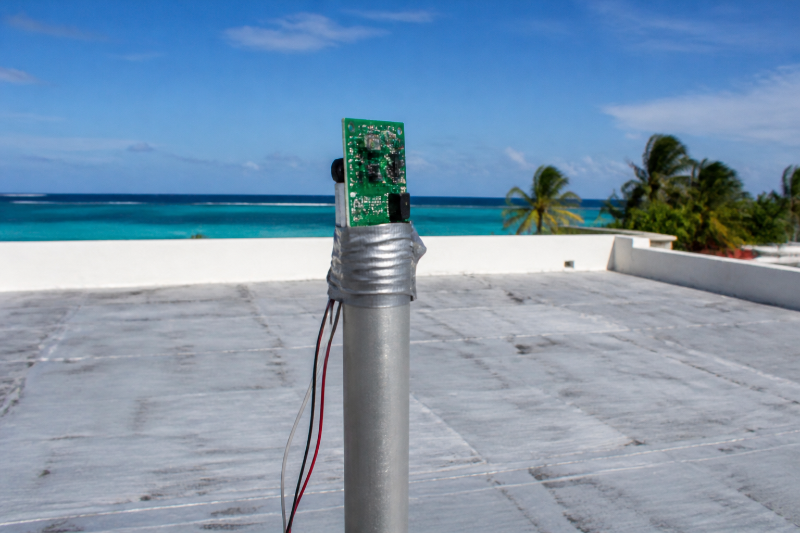

Ta mission : trouver la matière du boîtier de la station quand aucun des six matériaux ne tient le cahier des charges — décider quelle exigence relâcher, dire qui en paie le prix, puis justifier le matériau avec son procédé.
| Code | Formulation officielle (programme 2024) | Où, dans cette séquence |
|---|---|---|
| 3e_C7.3 | Choisir un matériau constitutif d’un objet et/ou système technique. | Activités 1 à 3 et REFAIRE — séances 1 à 4 |
| 3e_C4.2 (appui) | Justifier le choix d’un matériau et de son procédé de mise en forme au regard des contraintes techniques et environnementales. | Activité 3 (séance 3), REFAIRE et synthèse (séance 4) |
Référence normative : programme de technologie du cycle 4, BO n°9 du 29 février 2024. Codification opérationnelle : les codes 3e_C4.2 · 3e_C7.3 servent à ranger les séquences ; ils ne viennent pas du programme officiel.
Pour toi, sans note : coche ce qui est déjà en place. Sous chaque ligne, un lien pour le reprendre si tu n'en es pas sûr·e.
→ pas encore sûr·e ? relis « Un matériau peut-il être “le plus adapté” tout seul ? » dans la synthèse 4e_C7.3
→ pas encore sûr·e ? relis « D'où viennent les exigences du bac ? » dans la synthèse 4e_C7.3
→ pas encore sûr·e ? relis « Comment comparer honnêtement un prix et une durée de vie ? » dans la synthèse 4e_C7.3
Dans cette séquence : le cahier des charges du boîtier, tel qu'il est écrit, ne retient personne — aucun des six candidats ne passe. Ce n'est pas une erreur du banc, et ce n'est pas rare : c'est la situation ordinaire d'un bureau d'études. Le travail consiste à rouvrir le cahier des charges — et à dire qui paie. Autre difficulté : l'épaisseur des pièces n'est pas donnée. Elle dépend du matériau, et c'est ce qui rend les masses impossibles à deviner.
Un mot à garder en tête : on ne déplace qu'un seuil à la fois ; deux seuils déplacés ensemble, et le résultat n'a plus de cause identifiable.
La station d'alerte cyclonique est programmée (3e_C9.2), sa recette (les essais qui prouvent qu'elle fait ce qu'on attend d'elle) est signée (3e_C8.3), et son mât est validé : un tube aluminium Ø50 × 3 (50 mm de diamètre, 3 mm d'épaisseur), deux mètres, choisi en 3e_C8.2 après un essai de flexion. L'électronique est prête. Il manque la boîte qui la protège.
Le cahier des charges tient en cinq lignes : la boîte fait 200 × 150 × 90 mm, elle tient en tête de mât par vent de cyclone, elle vit dix ans sans ombre, elle reçoit les embruns salins (les gouttelettes d'eau de mer portées par le vent), elle ne cuit pas l'électronique qu'elle abrite, et un agent doit pouvoir la fixer d'une main en haut d'une échelle.
Six matériaux sont proposés — trois qui s'impriment, trois qui se plient et se percent. Aucun ne passe.

Aucun matériau ne tient le cahier des charges. Que fait-on — et qui paie la sortie qu'on choisit ?
On la reprendra au bilan. Personne ne la corrige : elle sert à mesurer le chemin parcouru.
Le PVC ne se découpe jamais au laser, et ce n'est pas négociable : chauffé, il dégage du chlorure d'hydrogène, qui brûle les voies respiratoires et corrode la machine de l'intérieur. Sciage et perçage seulement, sous aspiration.
L'impression du PLA et du PETG se fait en local ventilé. Une buse à 220 °C émet des particules ultrafines : capot fermé, extraction, et on ne se penche pas au-dessus du plateau pour regarder.
L'aluminium et l'inox se percent avec des lunettes, pièce bridée, jamais tenue à la main. Les copeaux d'inox sont fins, chauds et coupants — on les retire à la brosse, jamais aux doigts, et jamais à l'air comprimé.
Côté électricité, rien ne change : la station abritée par ce boîtier est alimentée en très basse tension. Aucune activité de cette séquence ne fait manipuler le secteur par un élève, et la pose en tête de mât — échelle, hauteur, toit — est un geste d'agent, pas d'élève.
Une question par ligne du bloc « Avant de commencer ». Elles ne sont pas notées et ne comptent pas dans ta progression : elles te disent quoi relire avant de te lancer. « Je ne sais pas encore » est une réponse utile.
Durée : 55 minutes · l'activité 0, puis la première partie de l'activité 1.
La question de la séance : quelle paroi chaque matériau exige-t-il, et lequel des six tient le cahier des charges tel qu'il est écrit ?
Toute la séquence se joue sur le cahier des charges du boîtier : le lire, puis décider s'il faut en rouvrir une ligne. Avant, cinq minutes pour retrouver ce que dit chaque case d'une ligne, sur deux lignes qui ne bougeront pas.
Ce que dit un cahier des charges, en trois mots : pour chaque fonction, un critère, un niveau et une flexibilité. Les mots de référence :
🐙 La leçon complète, avec un cahier des charges entier à compléter : l'atelier de 4e « Le diagramme des interacteurs extérieurs », exercice 6, « Le cahier des charges : critère, niveau, flexibilité », et son cours.
Complète ces deux lignes du cahier des charges du boîtier de la station, directement dans le tableau : chaque case à menu attend une réponse.
✅ Tu as réussi si… les 9 cases justes, et tu sais dire pourquoi chaque piège ne va pas.
Remplis le tableau colonne par colonne. Pour chaque case, relis la définition du mot, juste au-dessus, dans « Les mots du cahier des charges ».
📌 À retenir : chaque fonction du cahier des charges (FP ou FC) a une désignation qui commence par un verbe à l'infinitif, un critère (ce qu'on mesure), un niveau (un nombre et son unité) et une flexibilité (l'écart que le client accepte, de F0 impératif à F3 très négociable).
⚠ Le piège classique : prendre le niveau (« au moins… ») pour le critère, écrire un niveau sans unité, ou choisir la flexibilité d'après l'importance de la fonction au lieu de l'écart que le client accepte.
Le cahier des charges donne les dimensions extérieures du boîtier : 200 × 150 × 90 mm, six faces, soit 0,123 m² de paroi. Il ne donne pas l'épaisseur.
C'est normal, et c'est le cœur du mot constitutif : l'épaisseur nécessaire dépend du matériau. Une paroi résiste à la flexion comme le carré de son épaisseur — un matériau quatre fois plus résistant se contente d'une paroi deux fois plus fine. On part d'une référence mesurée en 3e_C8.2 : 3,00 mm de PLA (σ = 50 MPa, en mégapascals) tiennent le vent de cyclone. Pour tout autre matériau :
e = 3,00 × √(50 ÷ σ) · puis m = ρ × 0,123 × e
| À calculer — e = 3,00 × √(50 ÷ σ), puis m = ρ × surface × e | Ta valeur |
|---|---|
| Épaisseur de paroi en PLA (σ = 50 MPa, en mégapascals) | |
| Épaisseur de paroi en aluminium (σ = 160 MPa) | |
| Épaisseur de paroi en inox 316 (σ = 250 MPa) | |
| Masse du boîtier en aluminium (ρ = 2 700 kg/m³, surface 0,123 m²) |
| À calculer — e = 3,00 × √(50 ÷ σ), puis m = ρ × surface × e | Ta valeur |
|---|---|
| Épaisseur de paroi en PLA (σ = 50 MPa, en mégapascals) | 3 mm |
| Épaisseur de paroi en aluminium (σ = 160 MPa) | 1,68 mm |
| Épaisseur de paroi en inox 316 (σ = 250 MPa) | 1,34 mm |
| Masse du boîtier en aluminium (ρ = 2 700 kg/m³, surface 0,123 m²) | 0,56 kg |
Le calcul, ligne par ligne. Le PLA est la référence : σ = 50 MPa donne e = 3,00 × √(50 ÷ 50) = 3,00 mm. L'aluminium, σ = 160 MPa, donne e = 3,00 × √(50 ÷ 160) = 3,00 × 0,559 = 1,68 mm. L'inox, σ = 250 MPa, donne e = 3,00 × √(50 ÷ 250) = 3,00 × 0,447 = 1,34 mm.
Puis la masse : 2 700 × 0,123 × 0,00168 = 0,56 kg pour l'aluminium. Le PVC, lui, demande e = 3,00 × √(50 ÷ 45) = 3,16 mm, et pèse 1 400 × 0,123 × 0,00316 = 0,545 kg.
0,557 contre 0,545 : douze grammes d'écart, pour un matériau presque deux fois plus dense. La masse volumique ne dit rien de la masse de la pièce tant qu'on ne sait pas l'épaisseur — et l'épaisseur, c'est la résistance qui la fixe.
C'est aussi pour cela que le tableau du banc affiche les masses au gramme et non au dixième de kilo. Arrondies à 0,5 et 0,6 kg, ces deux valeurs raconteraient exactement le contraire de ce qu'elles démontrent.
Voici le banc, chargé des cinq exigences du boîtier. Clique sur ⚖ Évaluer les candidats, et lis la jauge de gauche.
Elle affiche 0. Prends le temps de vérifier que ce n'est pas une panne : chaque ligne du tableau porte un motif d'élimination écrit en clair, et ils ne sont pas tous les mêmes.
⚖ Le banc des matériaux de l'activité 1a — le même, avec tes exigences
Le banc des matériaux : six candidats, cinq exigences. Les masses ne sont pas des données — elles sont calculées à partir de l'épaisseur que chaque matériau exige.
Les exigences du cahier des charges. Décoche pour retirer un critère, ou change un seuil.
| Critère | Sens | Seuil | Pourquoi ce seuil | |
|---|---|---|---|---|
| Résistance | au moins | il tient sur un mât de 2 m par vent de 150 km/h | ||
| Tenue au soleil | au moins | en haut d'un mât, sans ombre, toute l'année | ||
| Tenue au sel | au moins | en cyclone, les embruns remontent à plusieurs kilomètres dans les terres | ||
| Température au soleil | au plus | l'électronique à l'intérieur ne doit pas dépasser sa température de service | ||
| Masse de la pièce | au plus | un agent le fixe en tête de mât, en haut d'une échelle, d'une seule main |
| Matériau | Résistance MPa | Tenue au soleil ans | Tenue au sel /5 | Température au soleil °C | Masse de la pièce kg | Coût € | Verdict |
|---|
Associe chaque candidat au motif exact de son élimination.
La suite de l'activité 1 — deux questions, puis la correction — ouvre la séance 2.
Durée : 55 minutes · la fin de l'activité 1, puis l'activité 2.
La question de la séance : puisque personne ne passe, quelle exigence relâcher — et sur qui retombe chaque sortie ?
Pour reprendre : réglé sur le cahier des charges tel qu'il est écrit, le banc ne retient aucun des six matériaux, et chaque candidat porte un motif d'élimination écrit en clair (activité 1a, séance 1). Reste à dire ce que ce zéro signifie. La vérification ci-dessous reprend aussi les quatre associations de la première partie.
🔒 Clique d'abord sur « ⚖ Évaluer les candidats » : le résultat de cette activité est justement ce que l'évaluation affiche.
Le PLA — deux exigences lui manquent : un an de soleil au lieu de dix, et le sel
Le PETG — il tient le sel, la chaleur et l'effort — mais cinq ans de soleil, pas dix
L'aluminium anodisé — il ne lui manque que le sel : 4 sur 5 quand on en exige 5
L'acier inoxydable 316 — il tient tout, et il pèse 1,320 kg quand on en admet 1,2
1. « Aucun candidat » est un résultat, pas un échec. Il dit une chose précise et utile : le cahier des charges demande, ensemble, quelque chose que le marché ne fournit pas. La suite du travail est alors de le rouvrir — pas en cachette et pas un peu partout, mais en désignant une exigence, en disant de combien on la relâche, et en écrivant ce que ce relâchement coûte. Prendre « le moins loin du but » sans rien écrire, c'est faire la même chose en se cachant de l'avoir faite.
2. Un tri par seuils n'ordonne pas les recalés. « À 4 sur 5 de tenue au sel » et « à 1,32 kg pour 1,2 admis » ne sont pas deux distances comparables : l'une se répare en changeant d'endroit, l'autre en changeant de mât. Un tableau qui donnerait un rang aux recalés inventerait une information que la mesure ne contient pas.
Regarde d'ailleurs qui échoue sur quoi : quatre des six tombent sur la même exigence, les dix ans de soleil. Quand une exigence élimine presque tout le monde, c'est souvent elle qu'il faut aller regarder — pas les candidats.
On ne relâche jamais deux exigences en même temps : on ne saurait plus laquelle a produit le résultat. La règle du jeu est donc stricte — un seul seuil déplacé à la fois, et le bouton ↺ Remettre le cahier des charges entre chaque essai.
Les seuils s'écrivent directement dans la colonne « Seuil » du banc. Fais les trois essais ci-dessous, dans l'ordre, et relève le nombre de matériaux retenus.
↑ Remonte au banc — c'est le même, et il a gardé tes exigences. Une page ne porte qu'un seul banc : deux exemplaires, ce seraient deux instruments qui répondent au même nom.
| Le seul seuil que tu déplaces | Matériaux retenus |
|---|---|
| Sortie A — « Tenue au sel » : 5 → 4 | |
| Sortie B — « Masse de la pièce » : 1,2 → 1,4 | |
| Sortie C — « Tenue au soleil » : 10 → 5 |
Et qui entre, exactement ?
🔒 Amène d'abord le banc à retenir EXACTEMENT UN matériau, en modifiant un seul seuil : c'est l'expérience que cette activité demande de relever.
| Le seuil déplacé | Retenus | Qui entre |
|---|---|---|
| Tenue au sel : 5 → 4 | 1 | Aluminium anodisé — 0,557 kg, 2,90 € |
| Masse : 1,2 → 1,4 kg | 1 | Inox 316 — 1,320 kg, 8,58 € |
| Tenue au soleil : 10 → 5 ans | 3 | PETG, PVC rigide, PP recyclé |
Trois sorties, et pas une seule gratuite.
A — le sel. On accepte 4 sur 5 : l'aluminium entre, le plus léger des métaux disponibles. Mais son anodisation est une couche, et une couche s'use : en bord de mer, elle demandera une reprise avant les dix ans. Le coût est reporté sur l'entretien — c'est-à-dire sur quelqu'un qui n'est pas dans la salle aujourd'hui.
B — la masse. On accepte 1,4 kg : l'inox entre, et plus rien ne s'use. Mais 1,32 kg au bout d'un bras, en haut d'une échelle, sur un toit — c'est exactement l'argument qui a fait écarter la barre d'acier de 4,93 kg en 3e_C8.2. Le coût est reporté sur la pose, donc sur l'agent qui monte.
C — le soleil. On accepte 5 ans : trois plastiques entrent, très bon marché (1,27 € à 12,74 €), et deux d'entre eux s'impriment au collège. Mais le boîtier sera à refaire une fois au milieu des dix ans. Le coût est reporté dans le temps — et sur celui qui remontera l'échelle en cinquième année.
C'est la leçon de la séquence. Une contrainte qu'on relâche ne disparaît jamais : elle change de porteur. Le travail du concepteur n'est pas de la faire disparaître, il est de dire à qui il l'envoie, pendant que tout le monde regarde.
Durée : 55 minutes · l'activité 3.
La question de la séance : comment écrire un choix qui nomme le matériau, son procédé de mise en forme, et celui qui porte le coût du relâchement ?
⚠️ À l'atelier : le PVC ne se découpe jamais au laser — sciage et perçage seulement, sous aspiration —, l'impression se fait en local ventilé, capot fermé, et l'aluminium et l'inox se percent avec des lunettes, pièce bridée. L'encadré complet est dans le rappel, en haut de page.
Choisir un matériau n'est pas terminé quand on a écrit son nom. Le code 3e_C4.2 demande de justifier « le choix d'un matériau et de son procédé de mise en forme » — parce qu'un matériau qu'on ne sait pas mettre en forme ici, avec les machines d'ici, n'est pas un matériau disponible.
↑ Remonte au banc — c'est le même, et il a gardé tes exigences. Une page ne porte qu'un seul banc : deux exemplaires, ce seraient deux instruments qui répondent au même nom.
Associe chaque sortie à ce qu'elle engage ailleurs dans le projet.
2. Rédige la justification que le bureau d'études rendra. Trois choses doivent y figurer : la sortie retenue et le seuil déplacé, le matériau et son procédé de mise en forme, et qui porte le coût du relâchement.
Le niveau attendu est le même : ces phrases donnent le départ, pas la réponse.
Sortie A — abaisser la tenue au sel à 4 : l'aluminium entre — il se plie et se perce à l'atelier, mais il ne s'imprime pas, et son anodisation devra être reprise avant dix ans
Sortie B — porter la masse admise à 1,4 kg : l'inox entre — plus rien ne s'use, mais la pose d'une main en haut d'une échelle n'est plus possible : c'est l'argument qui avait écarté la barre d'acier en 3e_C8.2
Sortie C — abaisser la tenue au soleil à 5 ans : PETG, PVC et PP entrent — on fabrique le boîtier au collège, et on accepte de le refaire une fois au milieu des dix ans
1. Le PVC est un thermoplastique, et pourtant il sort : il ne s'imprime pas en filament courant, et sa découpe laser est interdite — le chlorure d'hydrogène qu'il dégage attaque les voies respiratoires et la machine. Il se travaille par sciage, perçage et thermoformage, ce qui suppose un moule. Restent le PETG et le PP recyclé, tous deux imprimables.
Entre ces deux-là, le procédé départage encore. Le PETG s'imprime facilement et colle bien couche à couche ; le PP recyclé est notoirement difficile à faire tenir sur un plateau, et il se rétracte. À exigences égales, le matériau le plus vertueux sur le papier peut être le moins réalisable ici — et c'est une raison légitime de ne pas le retenir, à condition de l'écrire.
2. Une justification complète se reconnaît à trois marques. Un seuil nommé et chiffré : « tenue au soleil, de 10 à 5 ans », et non « on assouplit un peu ». Un couple matériau + procédé : « PETG, imprimé au collège en 3 mm de paroi », et non « du plastique ». Un porteur nommé : « le remplacement à cinq ans est à la charge du collège, et il est inscrit au plan de maintenance ».
Un dossier qui ne dit pas qui porte le coût n'est pas incomplet : il est trompeur. Le coût existe, il est simplement payé par quelqu'un qui n'a pas été prévenu.
Durée : 55 minutes · le REFAIRE, puis le bilan de la séquence et le renvoi au QCM.
La question de la séance : si l'on impose de fabriquer le boîtier au collège sans relâcher aucune exigence, que reste-t-il — et que retenir de toute la séquence ?
Le principal tranche autrement. Il ne veut relâcher aucune exigence du cahier des charges, mais il pose une condition nouvelle : le boîtier doit être fabriqué au collège, à l'imprimante 3D — parce qu'un boîtier qu'on sait refaire sur place se répare, et qu'un boîtier commandé ne se répare pas.
Cette condition n'est pas une caractéristique du matériau : c'est une contrainte de procédé. Elle ne figure dans aucune colonne du banc.
Écris : qui elle élimine, ce qu'il reste, et ce que le principal devra accepter malgré tout.
Le niveau attendu est le même : ces phrases donnent le départ, pas la réponse.
Qui elle élimine. Trois candidats sortent immédiatement, sans qu'aucun seuil ne bouge : l'aluminium et l'inox, qui se plient et se percent mais ne s'impriment pas, et le PVC, qui n'existe pas en filament courant et dont la découpe laser est interdite. Restent trois imprimables : PLA, PETG, PP recyclé.
Ce qu'il reste. Aucun des trois ne tient les dix ans de soleil : PLA 1 an, PP 6 ans, PETG 5 ans. Le PLA tombe en plus sur le sel. La condition du principal ne supprime pas le problème : elle le déplace sur l'exigence de tenue au soleil, et elle ferme du même coup les sorties A et B. Il ne reste que la sortie C — celle qu'il refusait.
Ce qu'il devra accepter. Exactement ce qu'il voulait éviter : un boîtier à refaire vers la cinquième année. Mais le raisonnement lui donne un argument qu'il n'avait pas — c'est précisément parce qu'on l'imprime au collège que ce remplacement est tenable : le fichier reste, la machine est là, et un boîtier de remplacement coûte 12,74 € de PETG et une nuit d'impression. La contrainte de procédé n'a pas résolu la contrainte de durée ; elle a rendu son coût acceptable.
Et voilà pourquoi le programme dit « matériau ET procédé ». Ce ne sont pas deux choix successifs : c'est un seul choix à deux entrées. Le procédé a éliminé trois matériaux sans qu'aucune caractéristique ne change, et il a ensuite justifié d'en accepter un que le cahier des charges refusait.
Reprends la sortie C, celle qui accepte cinq ans de soleil au lieu de dix. Puis pose la question que personne n'a posée de toute la séquence : d'où vient le chiffre « 10 ans » ?
Cherche ce qu'il protégeait vraiment. La station doit-elle durer dix ans, ou doit-elle fonctionner le jour du cyclone ? Ce ne sont pas les mêmes exigences, et elles n'appellent pas le même boîtier. Écris en trois lignes la question que tu poserais au commanditaire avant de relâcher quoi que ce soit.
Le niveau attendu est le même : ces phrases donnent le départ, pas la réponse.
Ce que le cahier des charges ne dit pas. Il écrit « elle vit dix ans sans ombre », mais pas pourquoi. Le plus probable : dix ans, c'est la durée de service prévue pour la station entière — ce que la mairie veut ne pas racheter avant longtemps —, recopiée sur le boîtier. On ne le sait pas : c'est justement ce qu'il faut demander, au lieu de le deviner.
Deux exigences sous un seul chiffre. « Durer dix ans » parle du coût : ne pas tout refaire trop tôt. « Fonctionner le jour du cyclone » parle de la sécurité : ce jour-là, le boîtier doit être étanche et solide, quel que soit son âge. La sortie C répond à la première par un entretien (un boîtier en PETG refait vers la cinquième année, au collège, pour 12,74 € de matière et une nuit d'impression) ; la seconde exige alors un boîtier jamais gardé au-delà de sa tenue au soleil, et vérifié avant chaque saison des cyclones.
Une question au commanditaire, en trois lignes, par exemple : « Les dix ans sont-ils la durée de vie de la station ou celle du boîtier ? Si nous remplaçons le boîtier une fois, à cinq ans, avant la saison des cyclones, pour 12,74 € et une nuit d'impression, cela vous convient-il ? Qu'est-ce qui ne doit jamais manquer : la durée, ou l'étanchéité le jour où le cyclone passe ? »
Attendus : la distinction entre la durée de vie et le bon fonctionnement le jour de l'événement ; une question qui demande au commanditaire de choisir, en lui disant ce que chaque réponse coûte et qui le paie ; la question posée avant de relâcher le seuil.
Erreurs typiques : inventer d'où vient le chiffre — le cahier des charges ne le dit pas, et c'est l'objet de la question ; relâcher d'abord et demander ensuite ; une question fermée (« on peut mettre 5 ans ? ») qui ne dit ni le coût ni qui le porte ; confondre « durer dix ans » et « dix ans sans aucun entretien ».
🔙 Ton idée de départ : —
Compare : ta réponse de départ proposait-elle de choisir « le moins mauvais », ou de rouvrir le cahier des charges ?
Le niveau attendu est le même : ces phrases donnent le départ, pas la réponse.
Comment j'ai travaillé :
Le niveau attendu est le même : ces phrases donnent le départ, pas la réponse.
Les quatre niveaux sont ceux du livret scolaire : maîtrise insuffisante · maîtrise fragile · maîtrise satisfaisante · très bonne maîtrise. Aucun n'est une note : choisis celui qui décrit ce que tu fais aujourd'hui.
30 questions sur le choix d'un matériau constitutif, l'épaisseur qui se déduit de la résistance, et le procédé qui fait partie du choix. 20 portent sur C7.3, 10 sur la justification du matériau et de sa mise en forme.
🚀 Ouvrir le QCM d'entraînement